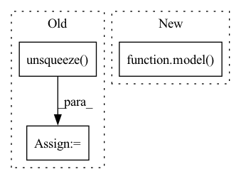

Pattern ID :14995

Before Change
lr_ycbcr = imgproc.convert_rgb_to_ycbcr(lr_image)
lr_image_y = lr_ycbcr[..., 0]
lr_image_y /= 255.
lr_tensor_y = torch.from_numpy(lr_image_y).to(config.device).unsqueeze(0).unsqueeze(0)
lr_tensor_y = lr_tensor_y.half()
// Extract Y channel bicubic image data.
bic_image = np.array(bic_image).astype(np.float32)
After Change
// Only reconstruct the Y channel image data.
with torch.no_grad():
sr_y_tensor = model(lr_y_tensor)
// Cal PSNR
total_psnr += 10. * torch.log10(1. / torch.mean((sr_y_tensor - hr_y_tensor) ** 2))
In pattern: SUPERPATTERN
Frequency: 3
Non-data size: 3
Instances
Fragment ID: 50444273
Project Name: lornatang/espcn-pytorch
Commit Name: 3d7da32ace2da2b908bad2a32243b464f206e72a
Time: 2021-11-30
Author: liuchangyu1111@gmail.com
File Name: validate.py
M Class Name: AnonimousClass
N Class Name: AnonimousClass
M Method Name: main(0)
N Method Name: main(0)
M Parent Class:
N Parent Class:
M File Name: validate.py
N File Name: validate.py
M Start Line: 65
M End Line: 95
N Start Line: 63
N End Line: 88
'>
Before Change
estimated_sources_amplitude[target].append(_estimated_sources_amplitude)
estimated_sources_amplitude = [
torch.cat(estimated_sources_amplitude[target], dim=0).unsqueeze(dim=0) for target in __sources__
]
estimated_sources_amplitude = torch.cat(estimated_sources_amplitude, dim=0) // (n_sources, batch_size, n_mics, n_bins, n_frames)
estimated_sources_amplitude = estimated_sources_amplitude.permute(0, 2, 3, 1, 4)
After Change
raise NotImplementedError("Not support {} channels input.".format(n_mics))
_mixture_amplitude = _mixture_amplitude.unsqueeze(dim=1) // (n_flips, 1, n_mics, n_bins, n_frames)
_estimated_sources_amplitude = model(_mixture_amplitude) // (n_flips, n_sources, n_mics, n_bins, n_frames)
if n_mics == 1:
_estimated_sources_amplitude = _estimated_sources_amplitude.mean(dim=2, keepdim=True) // (1, n_sources, n_mics, n_bins, n_frames)
'>
Fragment ID: 50444265
Project Name: tky823/dnn-based_source_separation
Commit Name: 217e98f862f93f0265909ff789fe6b945f207f35
Time: 2021-11-18
Author: delta9guitar97@gmail.com
File Name: egs/tutorials/mm-dense-lstm/src/adhoc_utils.py
M Class Name: AnonimousClass
N Class Name: AnonimousClass
M Method Name: separate_by_mm_dense_lstm(3)
N Method Name: separate_by_mm_dense_lstm(3)
M Parent Class:
N Parent Class:
M File Name: egs/tutorials/mm-dense-lstm/src/adhoc_utils.py
N File Name: egs/tutorials/mm-dense-lstm/src/adhoc_utils.py
M Start Line: 58
M End Line: 132
N Start Line: 19
N End Line: 125
'>
Before Change
estimated_sources_amplitude[target].append(_estimated_sources_amplitude)
estimated_sources_amplitude = [
torch.cat(estimated_sources_amplitude[target], dim=0).unsqueeze(dim=0) for target in __sources__
]
estimated_sources_amplitude = torch.cat(estimated_sources_amplitude, dim=0) // (n_sources, batch_size, n_mics, n_bins, n_frames)
estimated_sources_amplitude = estimated_sources_amplitude.permute(0, 2, 3, 1, 4)
After Change
raise NotImplementedError("Not support {} channels input.".format(n_mics))
_mixture_amplitude = _mixture_amplitude.unsqueeze(dim=1) // (n_flips, 1, n_mics, n_bins, n_frames)
_estimated_sources_amplitude = model(_mixture_amplitude) // (n_flips, n_sources, n_mics, n_bins, n_frames)
if n_mics == 1:
_estimated_sources_amplitude = _estimated_sources_amplitude.mean(dim=2, keepdim=True) // (1, n_sources, n_mics, n_bins, n_frames)
'>
Fragment ID: 50444269
Project Name: tky823/dnn-based_source_separation
Commit Name: 217e98f862f93f0265909ff789fe6b945f207f35
Time: 2021-11-18
Author: delta9guitar97@gmail.com
File Name: egs/tutorials/umx/src/adhoc_utils.py
M Class Name: AnonimousClass
N Class Name: AnonimousClass
M Method Name: separate_by_umx(3)
N Method Name: separate_by_umx(3)
M Parent Class:
N Parent Class:
M File Name: egs/tutorials/umx/src/adhoc_utils.py
N File Name: egs/tutorials/umx/src/adhoc_utils.py
M Start Line: 58
M End Line: 132
N Start Line: 19
N End Line: 125